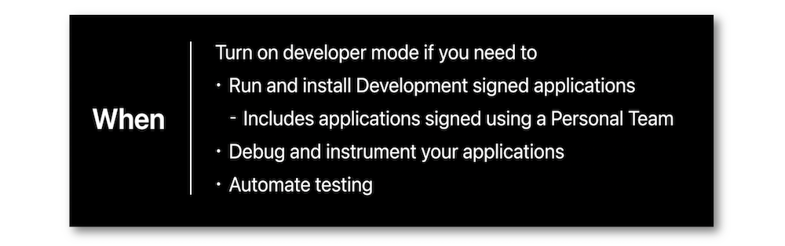

WWDC 2022: Develop with Xcode 14
Find hereafter a detailed summary of two videos that belong to a taxonomy of some WWDC footages.
The original videos are available on the official Apple website (session 110344, session 110371).
"Meet Developer Mode — required on iOS 16, iPadOS 16, and watchOS 9 to install, run, and debug your apps during development. We'll show you how you to opt in to Developer Mode on your devices, and how to enable Developer Mode in your automation workflows."
"Learn how you can build apps for multiple Apple platforms using Xcode 14. We'll show you how to streamline app targets, maintain a common codebase, and share settings by default. We'll also explore how you can customize your app for each platform through conditionalizing your settings and code.
Most of the illustrations are parts of the Apple presentations and may be available at the Resources section inside the Overview sheet of each video.
Hereafter, the underlined elements lead directly to the playback of the WWDC video at the appropriate moment.
Developer Mode #
Once the mode's goal is obviously known, it becomes crucial to find out what the most appropriate situations are to turn this mode on.

Some simple actions must be performed before using a single device with Xcode.
The same process may be automated for many devices at the same time but with one restriction though.
The arrival of the new macOS goes with an extra streaming subcommand that highly facilitates this Developer Mode activation for a large fleet of devices.
Multiplatform development #
While various targets are mandatory in a multiple platforms project using Xcode 13, one single target may be defined to reach this same goal with Xcode 14.
Configuration #
The enhanced multiplatform app template contains many possible destinations when creating an app and relies on the SwiftUI for its lifecycle and interface ⟹ see this example for adding a Mac destination to an existing iOS app.
Customizing some individual settings is now offered by conditionalizing some of its values.
Regarding the Signing & Capabilities tab, the Signing Certificate and Provisioning Profile for the different destinations are automatically handled by Xcode... like the push notifications among other things.
Build issues resolution #
The common build issues lie in the framework and API availability with the different destinations.
However, there are few ways to efficiently unravel this kind of problems:
-
Some SDKs features may be used only in some code parts thanks to Swift and SwiftUI.
-
Specific files may be compiled only for some SDKs during the Xcode building⟹ 🎬
OSÂ refinings #
A tip for adapting a constant to the platform's expectations leans on making this constant a computed property.

For the Mac users, a quick peek at the app content from the menu bar icon through a dedicated window is possible and easy to set up.
App publishing #
Xcode and Xcode Cloud are efficient ways for archiving and uploading the app products to App Store Connect.